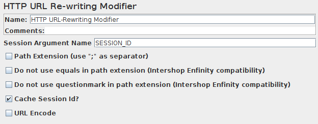

If your web application uses URL rewriting rather than cookies to save session information,
then you'll need to do a bit of extra work to test your site.
To respond correctly to URL rewriting, JMeter needs to parse the HTML
received from the server and retrieve the unique session ID. Use the appropriate
HTTP URL Re-writing Modifier
to accomplish this. Simply enter the name of your session ID parameter into the modifier, and it
will find it and add it to each request. If the request already has a value, it will be replaced.
If "Cache Session Id?" is checked, then the last found session id will be saved,
and will be used if the previous HTTP sample does not contain a session id.
¶URL Rewriting Example
Download
this example
. In Figure 1 is shown a
test plan using URL rewriting. Note that the URL Re-writing modifier is added to the SimpleController,
thus assuring that it will only affect requests under that SimpleController.
In Figure 2, we see the URL Re-writing modifier GUI, which just has a field for the user to specify
the name of the session ID parameter. There is also a checkbox for indicating that the session ID should
be part of the path (separated by a ";"), rather than a request parameter

Figure 2 - Request parameters
|